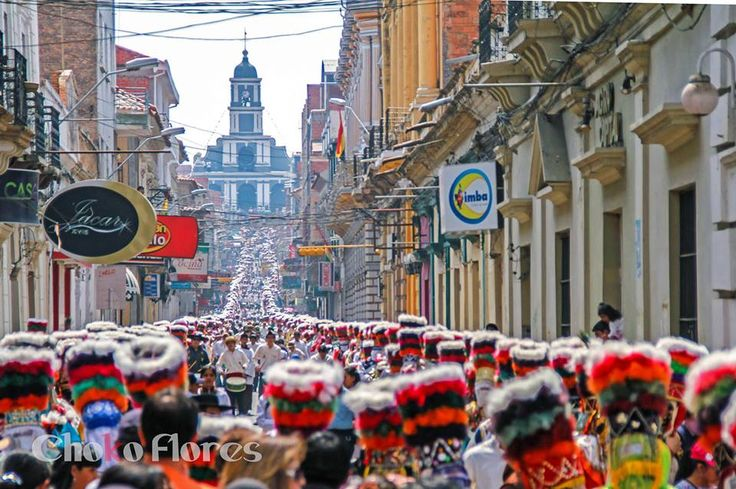
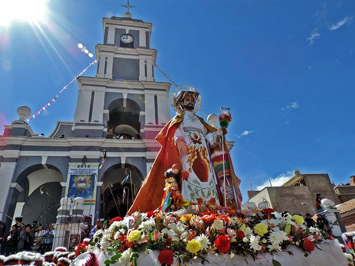

Patrimonio histórico, religioso y cultural
Iglesia de San Roque
Un templo de piedra y adobe en el corazón de Tarija, testigo de más de dos siglos de historia y cuna de la Fiesta Grande, reconocida por la UNESCO.
Conocer su historiaUn recorrido por San Roque
Recorre las distintas secciones de este sitio para descubrir la historia, la arquitectura, la fiesta y todo lo que rodea a uno de los templos más emblemáticos del departamento de Tarija.
Historia y Origen
Del siglo XVIII a la declaratoria de patrimonio departamental.
Qué ver
Fachada, altar mayor, torre y la Fiesta Grande.
Galería
Un recorrido visual por el templo y su entorno.
Cómo llegar
Ubicación, transporte y consejos para el visitante.
Gastronomía y Servicios
Sabores tarijeños y servicios cercanos al templo.
Contacto
Escríbenos y conoce a quienes hicimos este sitio.
Cuando la ciudad promete

Los Chunchos Promesantes
Recorren la ciudad con turbante, ponchillo y pollerín, transformando la promesa de fe en danza y movimiento cada agosto.

Patrimonio de la Humanidad
La Fiesta Grande de Tarija fue inscrita por la UNESCO en la Lista Representativa del Patrimonio Cultural Inmaterial de la Humanidad.